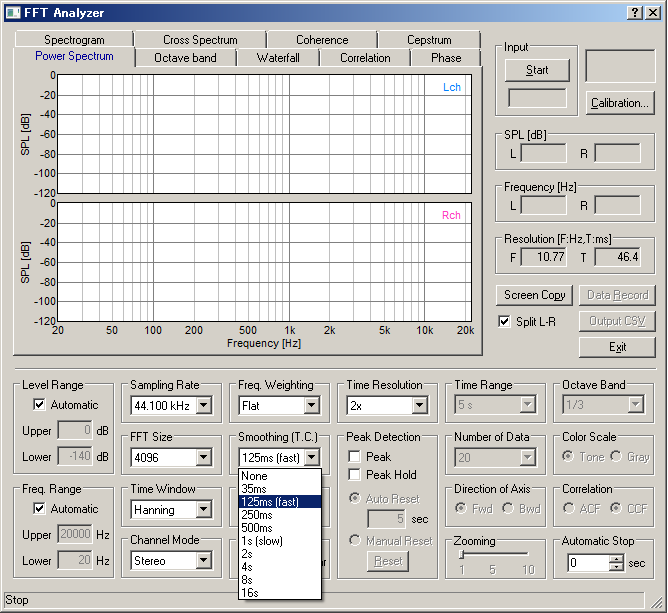

Setting of time constant in the FFT analyzer
Time constant of the smoothing function in the FFT analyzer can be set as time (s or ms). The standard Fast (125 ms) and Slow (1.0 s) time window can also be selected.

The sound level meter might have a measurement range switch. In this case, you can save several settings for each measurement range to measure a wide dynamic range.